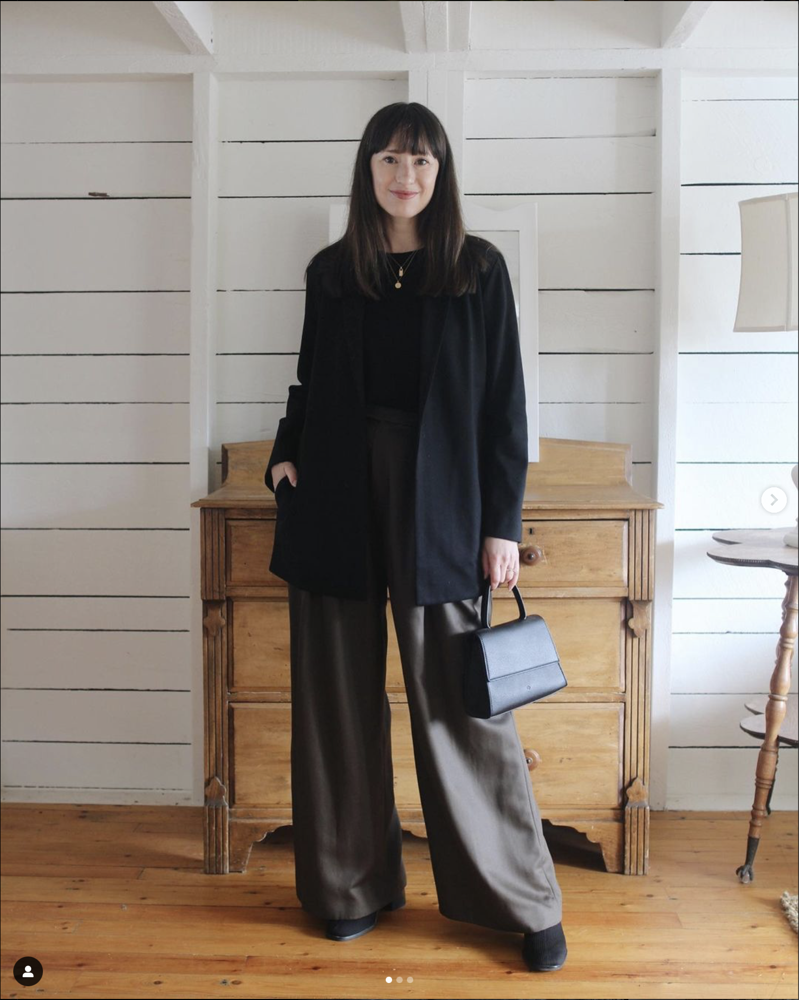
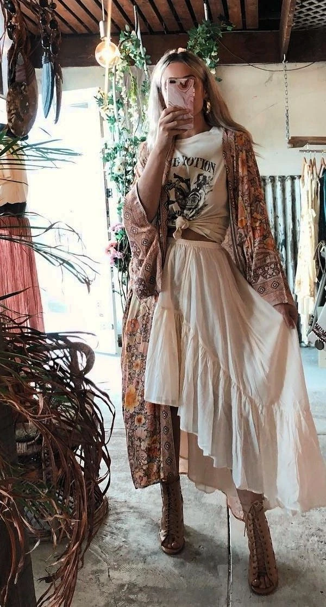

Minimal
The minimalist aesthetic revolves around simplicity, clean lines, and neutral colors.
Characteristics:- Neutral color palettes (white, black, beige).
- Simple, streamlined silhouettes.
- Focus on high-quality, versatile pieces.

Grunge
Grunge is all about rebellion, rawness, and the beauty in imperfection, inspired by the '90s music scene.
Characteristics:- Layered clothing, often oversized and distressed.
- Dark, moody color palettes.
- Mix of textures like flannel, denim, and leather.

Boho
The Bohemian aesthetic combines eclectic patterns, earthy tones, and a carefree lifestyle inspired by artistic expression.
Characteristics:- Flowy fabrics, often with floral or tribal patterns.
- Earthy tones mixed with vibrant accent colors.
- Layered accessories, including bracelets, necklaces, and scarves.
Street
The street aesthetic is inspired by urban culture, blending casual, comfortable wear with bold, expressive elements. It's a style that represents individuality and creativity, often influenced by hip-hop and skateboarding subcultures.
Characteristics:- Oversized hoodies and t-shirts.
- Bold logos and graphics.
- Mix of sneakers, cargo pants, and caps.
Retro
The retro aesthetic draws inspiration from past decades, celebrating the best of '70s, '80s, and '90s fashion. It often includes playful, nostalgic elements, bright colors, and bold patterns.
Characteristics:- Bold patterns like polka dots and stripes.
- Bright, playful color palettes.
- Incorporation of vintage pieces and accessories.
Vintage
The vintage aesthetic pays homage to styles from past eras, focusing on elegant, classic pieces often found in thrift stores. It’s about embracing timeless fashion that has endured through generations.
Characteristics:- Classic, timeless pieces from past decades.
- Delicate fabrics like lace and silk.
- Muted, earthy color palettes.